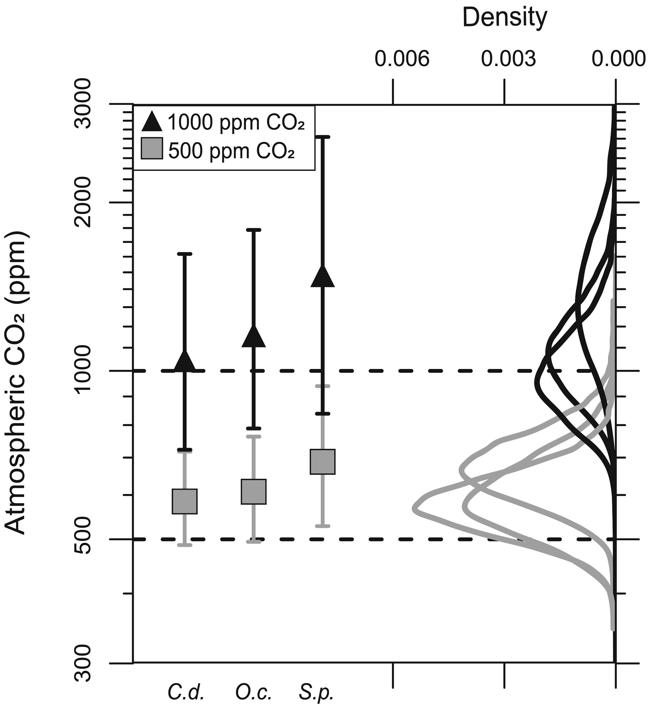

library(R2jags)
library(openxlsx)
library(viridisLite)
source("code/helpers.R")
parms = c("Pl", "l", "amax.scale", "D", "gc.scale", "ca", "meso.scale",
"Ci0_m", "A0_m", "d13Ca_m", "A", "D13C", "gcop")Franks PSM modern tests
Setup
Some preliminaries.
Load data.
d = read.xlsx("data/stomata-franks_modernTests.xlsx", sheet = 1, startRow = 3)Deal with a statistical enigma in the data set…this shows the distribution used for samples where the mean value for s3 is reported as 1.
mu = 0.97
sigma = 0.05
d$s3[d$s3 == 1] = mu
s3.v = (mu * (1 - mu)) / sigma ^ 2 - 1
s3.synth = rbeta(1e6, mu * s3.v, (1 - mu) * s3.v)
par(mar = c(5, 5, 1, 1))
plot(density(s3.synth, from = 0, to = 1), main = "", xlab = "s3", lwd = 4,
xaxs = "i", yaxs = "i")We also need to deal with values of A0, which are a species-level parameter in the forward model. I’ll average the values measured for each species + CO2 combo to get values we can treat as ~equivalent the the A0 values we’ll use for paleo data.
treats = unique(d$Sample.Name)
for(i in seq_along(treats)){
a.mean = mean(d$A0[d$Sample.Name == treats[i]])
d$A0[d$Sample.Name == treats[i]] = rep(a.mean)
}Now subset the data by treatment.
d.green.500 = d[d$Stratigraphic.Level == 500,]
d.green.1k = d[d$Stratigraphic.Level == 1000,]
d.field = d[d$Stratigraphic.Level == 400,]Field samples
We’ll run two versions of the analysis for the ~400 ppm field samples. First, a flat analysis with each sample interpreted independently. The model is running using A0 and CiCa0 as the anchor points for the Franks equations to calculate A, so assimilation is a free parameter and varies with ca.
data = parseFranks(d.field, condense = FALSE)
prepMod(data)
post.indv = jags.parallel(data, inits, parms, file.path(tempdir(), "model.txt"),
n.chains = 3, n.iter = 5e4, n.burnin = 1e4)Second, a hierarchical analysis, structured as such:
Using the hierarchical model, a single posterior sample is obtained for the stratigraphic level (here all of the samples are assumed to come from a single ‘strat level’) and species level parameters, and these apply to all individual samples of that species in that experimental treatment.
data = parseFranks(d.field)
prepMod(data)
post.group = jags.parallel(data, inits, parms, file.path(tempdir(), "model.txt"),
n.chains = 3, n.iter = 5e4, n.burnin = 1e4)Plot it, with Dana’s traditional interpretations for single samples and average on the right for comparison.
indv.dens = list()
dmax = 0
for(i in seq_along(post.indv$BUGSoutput$sims.list$ca[1, ])){
indv.dens[[i]] = density(post.indv$BUGSoutput$sims.list$ca[, i])
dmax = max(dmax, max(indv.dens[[i]]$y))
}
group.dens = density(post.group$BUGSoutput$sims.list$ca)
dmax = max(dmax, max(group.dens$y))
par(mar = c(4, 5, 1, 1))
plot(0, 0, type = "n", xlab = expression("Estimated CO"[2]*" (ppm)"),
ylab = "Probability", xlim = c(0, 1000), ylim = c(0, dmax * 1.04),
las = 1, xaxs = "i", yaxs = "i")
for(i in seq_along(indv.dens)){
lines(indv.dens[[i]], col = "forestgreen")
}
lines(group.dens, lwd = 3, col = "forestgreen")
box()OK, we see very close correspondence between the results for the Bayesian inversion and the Monte Carlo sampling of the traditional model. This despite the fact that A is treated as a free parameter in my analysis (but I believe was fixed in the traditional analysis). The multi-sample posterior is a bit tighter using the hierarchical PSM than that obtained with post-hoc integration of the results from the traditional model, but regardless this looks like pretty strong support for the PSM’s performance.
Greenhouse experiments
Per treatment
Now let’s work with the greenhouse data and run separate inversions for each species. Prep these subsets.
gen = unique(d.green.500$Genus)
d.green.500.g = d.green.1k.g = list()
for(i in seq_along(gen)){
d.green.500.g[[i]] = d.green.500[d.green.500$Genus == gen[i],]
d.green.1k.g[[i]] = d.green.1k[d.green.1k$Genus == gen[i],]
}Now run the inversions.
post.500 = post.1k = list()
for(i in seq_along(gen)){
data = parseFranks(d.green.500.g[[i]])
prepMod(data)
post.500[[i]] = jags.parallel(data, inits, parms, file.path(tempdir(), "model.txt"),
n.chains = 3, n.iter = 5e4, n.burnin = 1e4)
data = parseFranks(d.green.1k.g[[i]])
prepMod(data)
post.1k[[i]] = jags.parallel(data, inits, parms, file.path(tempdir(), "model.txt"),
n.chains = 3, n.iter = 5e4, n.burnin = 1e4)
}Let’s add a multi-species inversion for each CO2 treatment. Here we are applying a single value of ca and d13Ca across all taxa and samples in a given experimental treatment and a single set of species-level parameters for each species in the treatment.
data = parseFranks(d.green.500)
prepMod(data)
post.500[[4]] = jags.parallel(data, inits, parms, file.path(tempdir(), "model.txt"),
n.chains = 3, n.iter = 5e4, n.burnin = 1e4)
data = parseFranks(d.green.1k)
prepMod(data)
post.1k[[4]] = jags.parallel(data, inits, parms, file.path(tempdir(), "model.txt"),
n.chains = 3, n.iter = 5e4, n.burnin = 1e4)Plot it up, with the published interpretations from Milligan et al. 2019 shown on the right for comparison.
dens.500 = dens.1k = list()
for(i in 1:4){
dens.500[[i]] = density(post.500[[i]]$BUGSoutput$sims.list$ca)
dens.1k[[i]] = density(post.1k[[i]]$BUGSoutput$sims.list$ca)
}
par(mar = c(1, 5, 3, 1))
plot(0, 0, type = "n", xlim = c(0.018, 0), ylim = c(log(300), log(3000)), axes = FALSE,
xlab = "", ylab = expression("Atmospheric CO"[2]*" (ppm)"), xaxs = "i", yaxs = "i")
abline(h = log(500), lty = 2, lwd = 2, col = "grey")
abline(h = log(1000), lty = 2, lwd = 2)
abline(v = 0, lty = 3)
lines(dens.500[[4]]$y, log(dens.500[[4]]$x), lwd = 4, col = "grey")
lines(dens.1k[[4]]$y, log(dens.1k[[4]]$x), lwd = 4)
xpos = par("usr")[1] + 0.05 * diff(par("usr")[1:2])
for(i in 1:3){
lines(dens.500[[i]]$y, log(dens.500[[i]]$x), lwd = 2, col = "grey")
mi = match(max(dens.500[[i]]$y), dens.500[[i]]$y)
text(xpos, log(dens.500[[i]]$x[mi]), gen[i], pos = 4, col = "grey")
lines(dens.1k[[i]]$y, log(dens.1k[[i]]$x), lwd = 2)
mi = match(max(dens.1k[[i]]$y), dens.1k[[i]]$y)
text(xpos, log(dens.1k[[i]]$x[mi]), gen[i], pos = 4)
}
axis(3)
axis(2, at = log(c(300, 500, 1000, 2000, 3000)), labels = c(300, 500, 1000, 2000, 3000))
box()
Interesting results. The multi-species distributions are very close to the true values, but for individual species we see pretty strong deviations from the experimental conditions and these don’t match the results from the ‘traditional’ Franks model. My hunch is that this has to do with how the parameter averaging was done, but perhaps also in part reflects the fact that A is treated as a free parameter in my model.
Fixed assimilation
Let’s run a second analysis that fixes the value of A for each individual using the A0 values reported in the dataset.
# Re-prep the data, keeping reported A values
d.fA = read.xlsx("data/stomata-franks_modernTests.xlsx", sheet = 1, startRow = 3)
d.fA$s3[d$s3 == 1] = mu
d.green.500.fA = d.fA[d.fA$Stratigraphic.Level == 500,]
d.green.1k.fA = d.fA[d.fA$Stratigraphic.Level == 1000,]
d.green.500.g.fA = d.green.1k.g.fA = list()
for(i in seq_along(gen)){
d.green.500.g.fA[[i]] = d.green.500.fA[d.green.500.fA$Genus == gen[i],]
d.green.1k.g.fA[[i]] = d.green.1k.fA[d.green.1k.fA$Genus == gen[i],]
}
post.500.fA = post.1k.fA = list()
for(i in seq_along(gen)){
data = parseFranks(d.green.500.g.fA[[i]], fixA = TRUE)
prepMod.fixA(data)
post.500.fA[[i]] = jags.parallel(data, inits, parms, file.path(tempdir(), "model.txt"),
n.chains = 3, n.iter = 5e4, n.burnin = 1e4)
data = parseFranks(d.green.1k.g.fA[[i]], fixA = TRUE)
prepMod.fixA(data)
post.1k.fA[[i]] = jags.parallel(data, inits, parms, file.path(tempdir(), "model.txt"),
n.chains = 3, n.iter = 5e4, n.burnin = 1e4)
}
data = parseFranks(d.green.500.fA, fixA = TRUE)
prepMod.fixA(data)
post.500.fA[[4]] = jags.parallel(data, inits, parms, file.path(tempdir(), "model.txt"),
n.chains = 3, n.iter = 5e4, n.burnin = 1e4)
data = parseFranks(d.green.1k.fA, fixA = TRUE)
prepMod(data)
post.1k.fA[[4]] = jags.parallel(data, inits, parms, file.path(tempdir(), "model.txt"),
n.chains = 3, n.iter = 5e4, n.burnin = 1e4)Plot it.
dens.500.fA = dens.1k.fA = list()
for(i in 1:4){
dens.500.fA[[i]] = density(post.500.fA[[i]]$BUGSoutput$sims.list$ca)
dens.1k.fA[[i]] = density(post.1k.fA[[i]]$BUGSoutput$sims.list$ca)
}
par(mar = c(1, 5, 3, 1))
plot(0, 0, type = "n", xlim = c(0.024, 0), ylim = c(log(300), log(3000)), axes = FALSE,
xlab = "", ylab = expression("Atmospheric CO"[2]*" (ppm)"), xaxs = "i", yaxs = "i")
abline(h = log(500), lty = 2, lwd = 2, col = "grey")
abline(h = log(1000), lty = 2, lwd = 2)
abline(v = 0, lty = 3)
lines(dens.500.fA[[4]]$y, log(dens.500.fA[[4]]$x), lwd = 4, col = "grey")
lines(dens.1k.fA[[4]]$y, log(dens.1k.fA[[4]]$x), lwd = 4)
xpos = par("usr")[1] + 0.05 * diff(par("usr")[1:2])
for(i in 1:3){
lines(dens.500.fA[[i]]$y, log(dens.500.fA[[i]]$x), lwd = 2, col = "grey")
mi = match(max(dens.500.fA[[i]]$y), dens.500.fA[[i]]$y)
text(xpos, log(dens.500.fA[[i]]$x[mi]), gen[i], pos = 4, col = "grey")
lines(dens.1k.fA[[i]]$y, log(dens.1k.fA[[i]]$x), lwd = 2)
mi = match(max(dens.1k.fA[[i]]$y), dens.1k.fA[[i]]$y)
text(xpos, log(dens.1k.fA[[i]]$x[mi]), gen[i], pos = 4)
}
axis(3)
axis(2, at = log(c(300, 500, 1000, 2000, 3000)), labels = c(300, 500, 1000, 2000, 3000))
box()We see the same patterns but the dispersion between taxa is compressed somewhat and is a better (but not perfect) match to the published interpretations. In particular, by fixing A the 500 ppm posterior estimates for Stenochlaena and Cedrus shift closer to the true value. I haven’t dug deeply, but I think this makes sense:
- When
Ais not fixed, it will increase with increasingca, which reduces the increase in Ci/Ca that occurs ascaincreases, which means that a larger increase incais required to produce the same increase in photosynthetic 13C discrimination. - When
Ais fixed, there’s no additional drawdown ofciascaincreases and the rate of increase in Ci/Ca, and discrimination, ascaincreases is larger.
The multi-species posteriors here actually deviate from the true values slightly more than in the free-A analysis above, which is interesting but the effect is not large. In general, though, the results of the fixed-A case support the idea that the differences here, relative to the published results in Milligan et al. 2019 are mostly due to differences in how the information is integrated across samples.
Scaling assimilation
Let’s run one final experiment, perhaps a most rigorous test of the method. Here I’ll use the full hierarchical model but run all of the data together in a single analysis. For each species, we will use the mean A0 and CiCa0 values from the 500 ppm treatment to anchor the assimilation model and let the Franks model predict the assimilation rate at 1000 ppm by scaling from those values. Then we’ll do the same but anchor using the 1000 ppm values and scale to 500 ppm. For simplicity, I’ll only run the multi-species case.
data = parseFranks(rbind(d.green.500, d.green.1k))
prepMod(data)
post.green.up = jags.parallel(data, inits, parms, file.path(tempdir(), "model.txt"),
n.chains = 3, n.iter = 5e4, n.burnin = 1e4)
data = parseFranks(rbind(d.green.1k, d.green.500))
prepMod(data)
post.green.dn = jags.parallel(data, inits, parms, file.path(tempdir(), "model.txt"),
n.chains = 3, n.iter = 5e4, n.burnin = 1e4)par(mar = c(1, 5, 3, 1))
plot(0, 0, type = "n", xlim = c(0.01, 0), ylim = c(log(300), log(3000)), axes = FALSE,
xlab = "", ylab = expression("Atmospheric CO"[2]*" (ppm)"), xaxs = "i", yaxs = "i")
abline(h = log(500), lty = 2, lwd = 2, col = "grey")
abline(h = log(1000), lty = 2, lwd = 2)
d.500 = density(post.green.up$BUGSoutput$sims.list$ca[, 1])
d.1k = density(post.green.up$BUGSoutput$sims.list$ca[, 2])
lines(d.500$y, log(d.500$x), lwd = 4, col = "grey")
lines(d.1k$y, log(d.1k$x), lwd = 4)
d.500 = density(post.green.dn$BUGSoutput$sims.list$ca[, 2])
d.1k = density(post.green.dn$BUGSoutput$sims.list$ca[, 1])
lines(d.500$y, log(d.500$x), lwd = 4, lty = 2, col = "grey")
lines(d.1k$y, log(d.1k$x), lwd = 4, lty = 2)
legend("topright", c("500 ppm anchor", "1k ppm anchor"), lty = c(1, 2), lwd = 3)
axis(3)
axis(2, at = log(c(300, 500, 1000, 2000, 3000)), labels = c(300, 500, 1000, 2000, 3000))
box()IMO this is a mixed bag. The differences capture the nature of the experimental forcing. But there’s a general tendency for the model-estimated ca values to be too high, a compression of the difference in ca between treatments, and a sensitivity to which ca level we use to anchor the assimilation rate function.